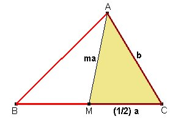

|
15. Construir un triángulo dados dos lados y la mediana relativa a uno de ellos. |
|
Ruiz, A. (1926): Nociones y ejercicios de aritmética y geometría. (pag 235) |
Solución de Francisco Javier García Capitán
Podemos suponer, sin pérdida de generalidad, que conocemos a, b, y ma.

En este caso, las dos partes del proceso son sencillas, ya que podemos construir fácilmente la mitad derecha del triángulo buscado, el triángulo AMC.
Y una vez hecho esto, hallaremos B como el simétrico de C respecto de M.